Classifying Synthetic Sequences - The Square Model¶
Setting Up¶
try:
import google.colab
import requests
url = 'https://raw.githubusercontent.com/dvgodoy/PyTorchStepByStep/master/config.py'
r = requests.get(url, allow_redirects=True)
open('config.py', 'wb').write(r.content)
except ModuleNotFoundError:
pass
from config import *
config_chapter8()
# This is needed to render the plots in this chapter
from plots.chapter8 import *
import numpy as np
import torch
import torch.optim as optim
import torch.nn as nn
import torch.nn.functional as F
from torch.utils.data import DataLoader, Dataset, random_split, TensorDataset
from torch.nn.utils import rnn as rnn_utils
Data Generation¶
import numpy as np
def generate_sequences(n=128, variable_len=False, seed=13):
basic_corners = np.array([[-1, -1], [-1, 1], [1, 1], [1, -1]])
np.random.seed(seed)
bases = np.random.randint(4, size=n)
if variable_len:
lengths = np.random.randint(3, size=n) + 2
else:
lengths = [4] * n
directions = np.random.randint(2, size=n)
points = [basic_corners[[(b + i) % 4 for i in range(4)]][slice(None, None, d*2-1)][:l] + np.random.randn(l, 2) * 0.1 for b, d, l in zip(bases, directions, lengths)]
return points, directions
Sequences¶
Data Generation¶
fig = counter_vs_clock(draw_arrows=False)
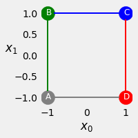
fig = counter_vs_clock()
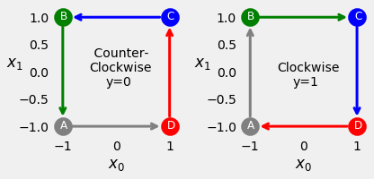
fig = plot_sequences()
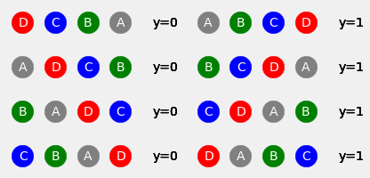
points, directions = generate_sequences(n=128, seed=13)
fig = plot_data(points, directions)
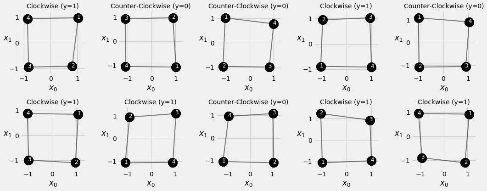
Square Model¶
Data Generation¶
test_points, test_directions = generate_sequences(seed=19)
Data Preparation¶
train_data = TensorDataset(torch.as_tensor(points).float(),
torch.as_tensor(directions).view(-1, 1).float())
test_data = TensorDataset(torch.as_tensor(test_points).float(),
torch.as_tensor(test_directions).view(-1, 1).float())
train_loader = DataLoader(train_data, batch_size=16, shuffle=True)
test_loader = DataLoader(test_data, batch_size=16)
Model Configuration¶
class SquareModel(nn.Module):
def __init__(self, n_features, hidden_dim, n_outputs):
super(SquareModel, self).__init__()
self.hidden_dim = hidden_dim
self.n_features = n_features
self.n_outputs = n_outputs
self.hidden = None
# Simple RNN
self.basic_rnn = nn.RNN(self.n_features, self.hidden_dim, batch_first=True)
# Classifier to produce as many logits as outputs
self.classifier = nn.Linear(self.hidden_dim, self.n_outputs)
def forward(self, X):
# X is batch first (N, L, F)
# output is (N, L, H)
# final hidden state is (1, N, H)
batch_first_output, self.hidden = self.basic_rnn(X)
# only last item in sequence (N, 1, H)
last_output = batch_first_output[:, -1]
# classifier will output (N, 1, n_outputs)
out = self.classifier(last_output)
# final output is (N, n_outputs)
return out.view(-1, self.n_outputs)
torch.manual_seed(21)
model = SquareModel(n_features=2, hidden_dim=2, n_outputs=1)
loss = nn.BCEWithLogitsLoss()
optimizer = optim.Adam(model.parameters(), lr=0.01)
Model Training¶
# Defines number of epochs
n_epochs = 200
losses = []
val_losses = []
for epoch in range(n_epochs):
# inner loop
loss = mini_batch(device, train_loader, train_step)
losses.append(loss)
# VALIDATION
# no gradients in validation!
with torch.no_grad():
val_loss = mini_batch(device, val_loader, val_step)
val_losses.append(val_loss)
sbs_rnn = StepByStep(model, loss, optimizer)
sbs_rnn.set_loaders(train_loader, test_loader)
sbs_rnn.train(100)
fig = sbs_rnn.plot_losses()
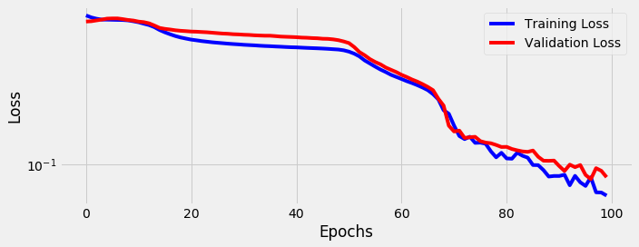
StepByStep.loader_apply(test_loader, sbs_rnn.correct)
tensor([[50, 53],
[75, 75]])
Visualizing the Model¶
Transformed Inputs¶
state = model.basic_rnn.state_dict()
state['weight_ih_l0'], state['bias_ih_l0']
(tensor([[-0.5873, -2.5140],
[-1.6189, -0.4233]], device='cuda:0'),
tensor([0.8272, 0.9219], device='cuda:0'))
fig = figure13(model.basic_rnn)
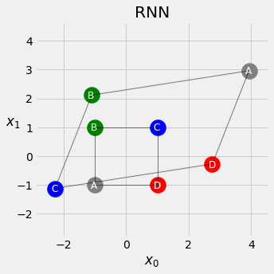


Gated Recurrent Units (GRUs)¶
\[\begin{split}
\Large
\begin{array}
&h_{new} &= tanh(t_h+t_x)
\\
h' &= h_{new} * (1 - z) + h_{old} * z
\end{array}
\end{split}\]
\[
\Large
h_{new} = tanh(r*t_h + t_x)
\]
\[
\Large
h' = tanh(r*t_h + t_x) * (1-z) + h*z
\]
GRU Cell¶
\[\begin{split}
\Large
\begin{array}
&RNN: &h'&=tanh(t_h+t_x)
\\
GRU: &h'&=\underbrace{\underbrace{tanh(\color{red}{r}*t_{hn}+t_{xn})}_{n}*\color{#0066CC}{(1-z)} + \color{gray}{h}*\color{#0066CC}{z}}_{weighted\ average\ of\ n\ and\ h}
\end{array}
\end{split}\]
\[\begin{split}
\Large
\begin{array}
&&\color{red}{r(eset\ gate)}&\color{red}{=\sigma(t_{hr}+t_{xr})}
\\
&\color{#0066CC}{z(update\ gate)}&\color{#0066CC}{=\sigma(t_{hz}+t_{xz})}
\\
&\color{black}{n}&\color{black}{=tanh(t_{hn}+t_{xn})}
\end{array}
\end{split}\]
\[\begin{split}
\Large
\begin{array}
&\color{red}{r\ (hidden)}&\color{red}{:t_{hr}}&\color{red}{=}&\color{red}{W_{hr}}&\color{red}{h}&\color{red}{+}&\color{red}{b_{hr}}
\\
\color{red}{r\ (input)}&\color{red}{:t_{xr}}&\color{red}{=}&\color{red}{W_{ir}}&\color{red}{x}&\color{red}{+}&\color{red}{b_{ir}}
\\
\color{#0066CC}{z\ (hidden)}&\color{#0066CC}{:t_{hz}}&\color{#0066CC}{=}&\color{#0066CC}{W_{hz}}&\color{#0066CC}{h}&\color{#0066CC}{+}&\color{#0066CC}{b_{hz}}
\\
\color{#0066CC}{z\ (input)}&\color{#0066CC}{:t_{xz}}&\color{#0066CC}{=}&\color{#0066CC}{W_{iz}}&\color{#0066CC}{x}&\color{#0066CC}{+}&\color{#0066CC}{b_{iz}}
\\
n\ (hidden)&:t_{hn}& = &W_{hn}&h&+&b_{hn}
\\
n\ (input)&:t_{xn}& = &W_{in}&x&+&b_{in}
\end{array}
\end{split}\]

n_features = 2
hidden_dim = 2
torch.manual_seed(17)
gru_cell = nn.GRUCell(input_size=n_features, hidden_size=hidden_dim)
gru_state = gru_cell.state_dict()
gru_state
OrderedDict([('weight_ih', tensor([[-0.0930, 0.0497],
[ 0.4670, -0.5319],
[-0.6656, 0.0699],
[-0.1662, 0.0654],
[-0.0449, -0.6828],
[-0.6769, -0.1889]])),
('weight_hh', tensor([[-0.4167, -0.4352],
[-0.2060, -0.3989],
[-0.7070, -0.5083],
[ 0.1418, 0.0930],
[-0.5729, -0.5700],
[-0.1818, -0.6691]])),
('bias_ih',
tensor([-0.4316, 0.4019, 0.1222, -0.4647, -0.5578, 0.4493])),
('bias_hh',
tensor([-0.6800, 0.4422, -0.3559, -0.0279, 0.6553, 0.2918]))])
Wx, bx = gru_state['weight_ih'], gru_state['bias_ih']
Wh, bh = gru_state['weight_hh'], gru_state['bias_hh']
print(Wx.shape, Wh.shape)
print(bx.shape, bh.shape)
torch.Size([6, 2]) torch.Size([6, 2])
torch.Size([6]) torch.Size([6])
\[\begin{split}
\Large
W_{xr}=
\begin{cases}
\begin{array}
&&-&0.0930,& &0.0497,
\\
& &0.4670,& -&0.5319,
\end{array}
\end{cases}
\\
\Large
W_{xz}=
\begin{cases}
\begin{array}
&&-&0.6656,&\ \ \ &0.0699,
\\
&-&0.1662,&\ &0.0654,
\end{array}
\end{cases}
\\
\Large
W_{xn}=
\begin{cases}
\begin{array}
&&-&0.0449,& -&0.6828,
\\
&-&0.6769,& -&0.1889
\end{array}
\end{cases}
\end{split}\]
\[
\Large
\underbrace{-0.4316, 0.4019}_{b_{xr}},
\underbrace{0.1222, -0.4647}_{b_{xz}},
\underbrace{-0.5578, 0.4493}_{b_{xn}}
\]
Wxr, Wxz, Wxn = Wx.split(hidden_dim, dim=0)
bxr, bxz, bxn = bx.split(hidden_dim, dim=0)
Whr, Whz, Whn = Wh.split(hidden_dim, dim=0)
bhr, bhz, bhn = bh.split(hidden_dim, dim=0)
Wxr, bxr
(tensor([[-0.0930, 0.0497],
[ 0.4670, -0.5319]]), tensor([-0.4316, 0.4019]))
def linear_layers(Wx, bx, Wh, bh):
hidden_dim, n_features = Wx.size()
lin_input = nn.Linear(n_features, hidden_dim)
lin_input.load_state_dict({'weight': Wx, 'bias': bx})
lin_hidden = nn.Linear(hidden_dim, hidden_dim)
lin_hidden.load_state_dict({'weight': Wh, 'bias': bh})
return lin_hidden, lin_input
r_hidden, r_input = linear_layers(Wxr, bxr, Whr, bhr) # reset gate - red
z_hidden, z_input = linear_layers(Wxz, bxz, Whz, bhz) # update gate - blue
n_hidden, n_input = linear_layers(Wxn, bxn, Whn, bhn) # candidate state - black
def reset_gate(h, x):
thr = r_hidden(h)
txr = r_input(x)
r = torch.sigmoid(thr + txr)
return r # red
def update_gate(h, x):
thz = z_hidden(h)
txz = z_input(x)
z = torch.sigmoid(thz + txz)
return z # blue
def candidate_n(h, x, r):
thn = n_hidden(h)
txn = n_input(x)
n = torch.tanh(r * thn + txn)
return n # black
initial_hidden = torch.zeros(1, hidden_dim)
X = torch.as_tensor(points[0]).float()
first_corner = X[0:1]
r = reset_gate(initial_hidden, first_corner)
r
tensor([[0.2387, 0.6928]], grad_fn=<SigmoidBackward>)
n = candidate_n(initial_hidden, first_corner, r)
n
tensor([[-0.8032, -0.2275]], grad_fn=<TanhBackward>)
z = update_gate(initial_hidden, first_corner)
z
tensor([[0.2984, 0.3540]], grad_fn=<SigmoidBackward>)
h_prime = n*(1-z) + initial_hidden*z
h_prime
tensor([[-0.5635, -0.1470]], grad_fn=<AddBackward0>)
gru_cell(first_corner)
tensor([[-0.5635, -0.1470]], grad_fn=<AddBackward0>)
GRU Layer¶
Square Model II: The Quickening¶
class SquareModelGRU(nn.Module):
def __init__(self, n_features, hidden_dim, n_outputs):
super(SquareModelGRU, self).__init__()
self.hidden_dim = hidden_dim
self.n_features = n_features
self.n_outputs = n_outputs
self.hidden = None
# Simple GRU
self.basic_rnn = nn.GRU(self.n_features, self.hidden_dim, batch_first=True)
# Classifier to produce as many logits as outputs
self.classifier = nn.Linear(self.hidden_dim, self.n_outputs)
def forward(self, X):
# X is batch first (N, L, F)
# output is (N, L, H)
# final hidden state is (1, N, H)
batch_first_output, self.hidden = self.basic_rnn(X)
# only last item in sequence (N, 1, H)
last_output = batch_first_output[:, -1]
# classifier will output (N, 1, n_outputs)
out = self.classifier(last_output)
# final output is (N, n_outputs)
return out.view(-1, self.n_outputs)
Model Configuration & Training¶
torch.manual_seed(21)
model = SquareModelGRU(n_features=2, hidden_dim=2, n_outputs=1)
loss = nn.BCEWithLogitsLoss()
optimizer = optim.Adam(model.parameters(), lr=0.01)
sbs_gru = StepByStep(model, loss, optimizer)
sbs_gru.set_loaders(train_loader, test_loader)
sbs_gru.train(100)
fig = sbs_gru.plot_losses()
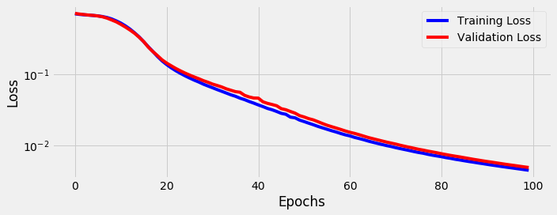
StepByStep.loader_apply(test_loader, sbs_gru.correct)
tensor([[53, 53],
[75, 75]])
Visualizing the Model¶
Hidden States¶
fig = figure20(sbs_rnn.model, sbs_gru.model)
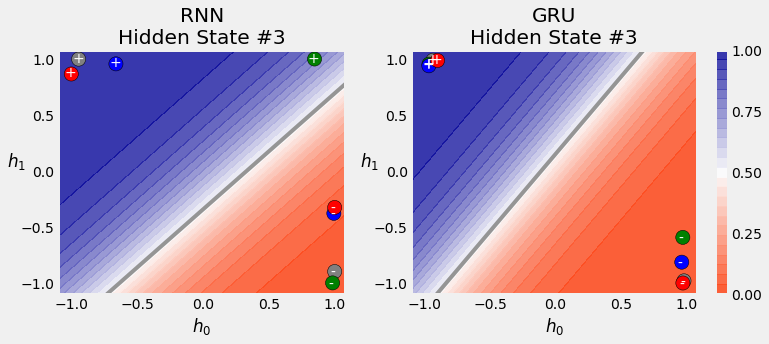
fig = hidden_states_contour(model, points, directions)
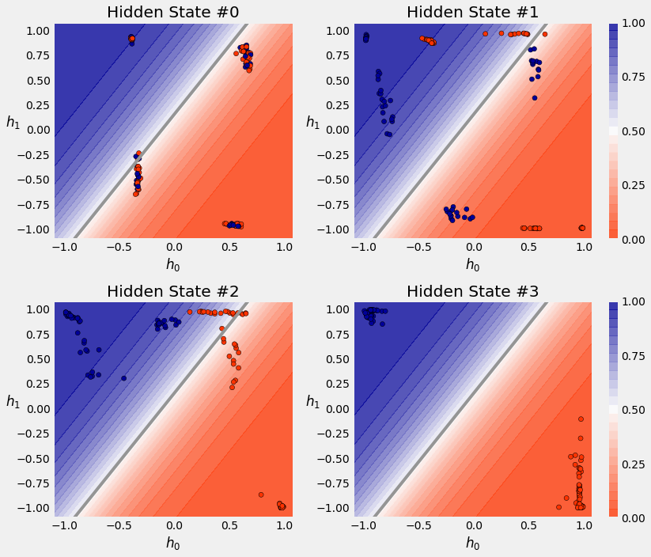
Long Short-Term Memory (LSTM)¶
\[
\Large
g = tanh(t_{hg}+t_{xg})
\]
\[
\Large
c' = g * i + c * f
\]
\[
\Large
h' = tanh(c') * o
\]
LSTM Cell¶
\[\begin{split}
\Large
\begin{array}
&RNN: &h'&=tanh(t_h+t_x)
\\
GRU: &h'&=tanh(r*t_{hn}+t_{xn})&*&(1-z)&+&h*z
\\
LSTM: &c'&=\underbrace{tanh(t_{hg}+t_{xg})}_{g}&*&\color{#82b366}{i}&+&\color{gray}{c}*\color{red}{f}
\\
&h'&=tanh(c')&*&\color{#0066cc}{o}
\end{array}
\end{split}\]
\[\begin{split}
\Large
\begin{array}
&&\color{#82b366}{i(nput\ gate)}&=\color{#82b366}{\sigma(t_{hi}+t_{xi})}
\\
&\color{red}{f(orget\ gate)}&\color{red}{=\sigma(t_{hf}+t_{xf})}
\\
&\color{#0066cc}{o(utput\ gate)}&\color{#0066cc}{=\sigma(t_{ho}+t_{xo})}
\\
&g&=tanh(t_{hg}+t_{xg})
\end{array}
\end{split}\]
\[\begin{split}
\Large
\begin{array}
&\color{#82b366}{i\ (hidden)}&\color{#82b366}{:t_{hi}}&\color{#82b366}{=}&\color{#82b366}{W_{hi}}&\color{#82b366}{h}&\color{#82b366}{+}&\color{#82b366}{b_{hi}}
\\
\color{#82b366}{i\ (input)}&\color{#82b366}{:t_{xi}}&\color{#82b366}{=}&\color{#82b366}{W_{ii}}&\color{#82b366}{x}&\color{#82b366}{+}&\color{#82b366}{b_{ii}}
\\
\color{red}{f\ (hidden)}&\color{red}{:t_{hf}}&\color{red}{=}&\color{red}{W_{hf}}&\color{red}{h}&\color{red}{+}&\color{red}{b_{hf}}
\\
\color{red}{f\ (input)}&\color{red}{:t_{xf}}&\color{red}{=}&\color{red}{W_{if}}&\color{red}{x}&\color{red}{+}&\color{red}{b_{if}}
\\
g\ (hidden)&:t_{hg}& = &W_{hg}&h&+&b_{hg}
\\
g\ (input)&:t_{xg}& = &W_{ig}&x&+&b_{ig}
\\
\color{#0066cc}{o\ (hidden)}&\color{#0066cc}{:t_{ho}}&\color{#0066cc}{=}&\color{#0066cc}{W_{ho}}&\color{#0066cc}{h}&\color{#0066cc}{+}&\color{#0066cc}{b_{ho}}
\\
\color{#0066cc}{o\ (input)}&\color{#0066cc}{:t_{xo}}&\color{#0066cc}{=}&\color{#0066cc}{W_{io}}&\color{#0066cc}{x}&\color{#0066cc}{+}&\color{#0066cc}{b_{io}}
\end{array}
\end{split}\]

n_features = 2
hidden_dim = 2
torch.manual_seed(17)
lstm_cell = nn.LSTMCell(input_size=n_features, hidden_size=hidden_dim)
lstm_state = lstm_cell.state_dict()
lstm_state
OrderedDict([('weight_ih', tensor([[-0.0930, 0.0497],
[ 0.4670, -0.5319],
[-0.6656, 0.0699],
[-0.1662, 0.0654],
[-0.0449, -0.6828],
[-0.6769, -0.1889],
[-0.4167, -0.4352],
[-0.2060, -0.3989]])),
('weight_hh', tensor([[-0.7070, -0.5083],
[ 0.1418, 0.0930],
[-0.5729, -0.5700],
[-0.1818, -0.6691],
[-0.4316, 0.4019],
[ 0.1222, -0.4647],
[-0.5578, 0.4493],
[-0.6800, 0.4422]])),
('bias_ih',
tensor([-0.3559, -0.0279, 0.6553, 0.2918, 0.4007, 0.3262, -0.0778, -0.3002])),
('bias_hh',
tensor([-0.3991, -0.3200, 0.3483, -0.2604, -0.1582, 0.5558, 0.5761, -0.3919]))])
Wx, bx = lstm_state['weight_ih'], lstm_state['bias_ih']
Wh, bh = lstm_state['weight_hh'], lstm_state['bias_hh']
# Split weights and biases for data points
Wxi, Wxf, Wxg, Wxo = Wx.split(hidden_dim, dim=0)
bxi, bxf, bxg, bxo = bx.split(hidden_dim, dim=0)
# Split weights and biases for hidden state
Whi, Whf, Whg, Who = Wh.split(hidden_dim, dim=0)
bhi, bhf, bhg, bho = bh.split(hidden_dim, dim=0)
# Creates linear layers for the components
i_hidden, i_input = linear_layers(Wxi, bxi, Whi, bhi) # input gate - green
f_hidden, f_input = linear_layers(Wxf, bxf, Whf, bhf) # forget gate - red
o_hidden, o_input = linear_layers(Wxo, bxo, Who, bho) # output gate - blue
g_cell = nn.RNNCell(n_features, hidden_dim) # black
g_cell.load_state_dict({'weight_ih': Wxg, 'bias_ih': bxg,
'weight_hh': Whg, 'bias_hh': bhg})
<All keys matched successfully>
def forget_gate(h, x):
thf = f_hidden(h)
txf = f_input(x)
f = torch.sigmoid(thf + txf)
return f # red
def output_gate(h, x):
tho = o_hidden(h)
txo = o_input(x)
o = torch.sigmoid(tho + txo)
return o # blue
def input_gate(h, x):
thi = i_hidden(h)
txi = i_input(x)
i = torch.sigmoid(thi + txi)
return i # green
initial_hidden = torch.zeros(1, hidden_dim)
initial_cell = torch.zeros(1, hidden_dim)
X = torch.as_tensor(points[0]).float()
first_corner = X[0:1]
g = g_cell(first_corner)
i = input_gate(initial_hidden, first_corner)
gated_input = g * i
gated_input
tensor([[-0.1340, -0.0004]], grad_fn=<MulBackward0>)
f = forget_gate(initial_hidden, first_corner)
gated_cell = initial_cell * f
gated_cell
tensor([[0., 0.]], grad_fn=<MulBackward0>)
c_prime = gated_cell + gated_input
c_prime
tensor([[-0.1340, -0.0004]], grad_fn=<AddBackward0>)
o = output_gate(initial_hidden, first_corner)
h_prime = o * torch.tanh(c_prime)
h_prime
tensor([[-5.4936e-02, -8.3816e-05]], grad_fn=<MulBackward0>)
(h_prime, c_prime)
(tensor([[-5.4936e-02, -8.3816e-05]], grad_fn=<MulBackward0>),
tensor([[-0.1340, -0.0004]], grad_fn=<AddBackward0>))
lstm_cell(first_corner)
(tensor([[-5.4936e-02, -8.3816e-05]], grad_fn=<MulBackward0>),
tensor([[-0.1340, -0.0004]], grad_fn=<AddBackward0>))
LSTM Layer¶
Square Model III: The Sorcerer¶
Model Configuration¶
class SquareModelLSTM(nn.Module):
def __init__(self, n_features, hidden_dim, n_outputs):
super(SquareModelLSTM, self).__init__()
self.hidden_dim = hidden_dim
self.n_features = n_features
self.n_outputs = n_outputs
self.hidden = None
self.cell = None
# Simple LSTM
self.basic_rnn = nn.LSTM(self.n_features, self.hidden_dim, batch_first=True)
# Classifier to produce as many logits as outputs
self.classifier = nn.Linear(self.hidden_dim, self.n_outputs)
def forward(self, X):
# X is batch first (N, L, F)
# output is (N, L, H)
# final hidden state is (1, N, H)
# final cell state is (1, N, H)
batch_first_output, (self.hidden, self.cell) = self.basic_rnn(X)
# only last item in sequence (N, 1, H)
last_output = batch_first_output[:, -1]
# classifier will output (N, 1, n_outputs)
out = self.classifier(last_output)
# final output is (N, n_outputs)
return out.view(-1, self.n_outputs)
Model Configuration & Training¶
torch.manual_seed(21)
model = SquareModelLSTM(n_features=2, hidden_dim=2, n_outputs=1)
loss = nn.BCEWithLogitsLoss()
optimizer = optim.Adam(model.parameters(), lr=0.01)
sbs_lstm = StepByStep(model, loss, optimizer)
sbs_lstm.set_loaders(train_loader, test_loader)
sbs_lstm.train(100)
fig = sbs_lstm.plot_losses()
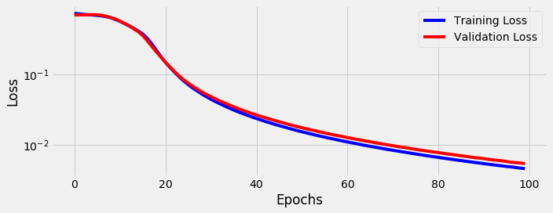
StepByStep.loader_apply(test_loader, sbs_lstm.correct)
tensor([[53, 53],
[75, 75]])
Variable-Length Sequences¶
s0 = points[0] # 4 data points
s1 = points[1][2:] # 2 data points
s2 = points[2][1:] # 3 data points
s0.shape, s1.shape, s2.shape
((4, 2), (2, 2), (3, 2))
Padding¶
all_seqs = [s0, s1, s2]
torch.as_tensor(all_seqs)
---------------------------------------------------------------------------
ValueError Traceback (most recent call last)
<ipython-input-99-6b27e47c9e64> in <module>
1 all_seqs = [s0, s1, s2]
----> 2 torch.as_tensor(all_seqs)
ValueError: expected sequence of length 4 at dim 1 (got 2)
seq_tensors = [torch.as_tensor(seq).float() for seq in all_seqs]
padded = rnn_utils.pad_sequence(seq_tensors, batch_first=True)
padded
tensor([[[ 1.0349, 0.9661],
[ 0.8055, -0.9169],
[-0.8251, -0.9499],
[-0.8670, 0.9342]],
[[-1.0911, 0.9254],
[-1.0771, -1.0414],
[ 0.0000, 0.0000],
[ 0.0000, 0.0000]],
[[-1.1247, -0.9683],
[ 0.8182, -0.9944],
[ 1.0081, 0.7680],
[ 0.0000, 0.0000]]])
torch.manual_seed(11)
rnn = nn.RNN(2, 2, batch_first=True)
output_padded, hidden_padded = rnn(padded)
output_padded
tensor([[[-0.6388, 0.8505],
[-0.4215, 0.8979],
[ 0.3792, 0.3432],
[ 0.3161, -0.1675]],
[[ 0.2911, -0.1811],
[ 0.3051, 0.7055],
[ 0.0052, 0.5819],
[-0.0642, 0.6012]],
[[ 0.3385, 0.5927],
[-0.3875, 0.9422],
[-0.4832, 0.6595],
[-0.1007, 0.5349]]], grad_fn=<TransposeBackward1>)
hidden_padded.permute(1, 0, 2)
tensor([[[ 0.3161, -0.1675]],
[[-0.0642, 0.6012]],
[[-0.1007, 0.5349]]], grad_fn=<PermuteBackward>)
Packing¶
packed = rnn_utils.pack_sequence(seq_tensors, enforce_sorted=False)
packed
PackedSequence(data=tensor([[ 1.0349, 0.9661],
[-1.1247, -0.9683],
[-1.0911, 0.9254],
[ 0.8055, -0.9169],
[ 0.8182, -0.9944],
[-1.0771, -1.0414],
[-0.8251, -0.9499],
[ 1.0081, 0.7680],
[-0.8670, 0.9342]]), batch_sizes=tensor([3, 3, 2, 1]), sorted_indices=tensor([0, 2, 1]), unsorted_indices=tensor([0, 2, 1]))


(packed.data[[0, 3, 6, 8]] == seq_tensors[0]).all()
tensor(True)
output_packed, hidden_packed = rnn(packed)
output_packed, hidden_packed
(PackedSequence(data=tensor([[-0.6388, 0.8505],
[ 0.3385, 0.5927],
[ 0.2911, -0.1811],
[-0.4215, 0.8979],
[-0.3875, 0.9422],
[ 0.3051, 0.7055],
[ 0.3792, 0.3432],
[-0.4832, 0.6595],
[ 0.3161, -0.1675]], grad_fn=<CatBackward>), batch_sizes=tensor([3, 3, 2, 1]), sorted_indices=tensor([0, 2, 1]), unsorted_indices=tensor([0, 2, 1])),
tensor([[[ 0.3161, -0.1675],
[ 0.3051, 0.7055],
[-0.4832, 0.6595]]], grad_fn=<IndexSelectBackward>))
hidden_packed == hidden_padded
tensor([[[ True, True],
[False, False],
[False, False]]])
output_packed.data[[2, 5]] # x1 sequence
tensor([[ 0.2911, -0.1811],
[ 0.3051, 0.7055]], grad_fn=<IndexBackward>)
Unpacking (to padded)¶
output_unpacked, seq_sizes = rnn_utils.pad_packed_sequence(output_packed, batch_first=True)
output_unpacked, seq_sizes
(tensor([[[-0.6388, 0.8505],
[-0.4215, 0.8979],
[ 0.3792, 0.3432],
[ 0.3161, -0.1675]],
[[ 0.2911, -0.1811],
[ 0.3051, 0.7055],
[ 0.0000, 0.0000],
[ 0.0000, 0.0000]],
[[ 0.3385, 0.5927],
[-0.3875, 0.9422],
[-0.4832, 0.6595],
[ 0.0000, 0.0000]]], grad_fn=<IndexSelectBackward>),
tensor([4, 2, 3]))
output_unpacked[:, -1]
tensor([[ 0.3161, -0.1675],
[ 0.0000, 0.0000],
[ 0.0000, 0.0000]], grad_fn=<SelectBackward>)
seq_idx = torch.arange(seq_sizes.size(0))
output_unpacked[seq_idx, seq_sizes-1]
tensor([[ 0.3161, -0.1675],
[ 0.3051, 0.7055],
[-0.4832, 0.6595]], grad_fn=<IndexBackward>)
Packing (from padded)¶
len_seqs = [len(seq) for seq in all_seqs]
len_seqs
[4, 2, 3]
packed = rnn_utils.pack_padded_sequence(padded, len_seqs, enforce_sorted=False, batch_first=True)
packed
PackedSequence(data=tensor([[ 1.0349, 0.9661],
[-1.1247, -0.9683],
[-1.0911, 0.9254],
[ 0.8055, -0.9169],
[ 0.8182, -0.9944],
[-1.0771, -1.0414],
[-0.8251, -0.9499],
[ 1.0081, 0.7680],
[-0.8670, 0.9342]]), batch_sizes=tensor([3, 3, 2, 1]), sorted_indices=tensor([0, 2, 1]), unsorted_indices=tensor([0, 2, 1]))
Variable-Length Dataset¶
var_points, var_directions = generate_sequences(variable_len=True)
var_points[:2]
[array([[ 1.12636495, 1.1570899 ],
[ 0.87384513, -1.00750892],
[-0.9149893 , -1.09150317],
[-1.0867348 , 1.07731667]]), array([[ 0.92250954, -0.89887678],
[ 1.0941646 , 0.92300589]])]
Data Preparation¶
class CustomDataset(Dataset):
def __init__(self, x, y):
self.x = [torch.as_tensor(s).float() for s in x]
self.y = torch.as_tensor(y).float().view(-1, 1)
def __getitem__(self, index):
return (self.x[index], self.y[index])
def __len__(self):
return len(self.x)
train_var_data = CustomDataset(var_points, var_directions)
train_var_loader = DataLoader(train_var_data, batch_size=16, shuffle=True)
next(iter(train_var_loader))
---------------------------------------------------------------------------
RuntimeError Traceback (most recent call last)
<ipython-input-117-596b8081f8d1> in <module>
1 train_var_loader = DataLoader(train_var_data, batch_size=16, shuffle=True)
----> 2 next(iter(train_var_loader))
~/anaconda3/envs/torch/lib/python3.7/site-packages/torch/utils/data/dataloader.py in __next__(self)
361
362 def __next__(self):
--> 363 data = self._next_data()
364 self._num_yielded += 1
365 if self._dataset_kind == _DatasetKind.Iterable and \
~/anaconda3/envs/torch/lib/python3.7/site-packages/torch/utils/data/dataloader.py in _next_data(self)
401 def _next_data(self):
402 index = self._next_index() # may raise StopIteration
--> 403 data = self._dataset_fetcher.fetch(index) # may raise StopIteration
404 if self._pin_memory:
405 data = _utils.pin_memory.pin_memory(data)
~/anaconda3/envs/torch/lib/python3.7/site-packages/torch/utils/data/_utils/fetch.py in fetch(self, possibly_batched_index)
45 else:
46 data = self.dataset[possibly_batched_index]
---> 47 return self.collate_fn(data)
~/anaconda3/envs/torch/lib/python3.7/site-packages/torch/utils/data/_utils/collate.py in default_collate(batch)
82 raise RuntimeError('each element in list of batch should be of equal size')
83 transposed = zip(*batch)
---> 84 return [default_collate(samples) for samples in transposed]
85
86 raise TypeError(default_collate_err_msg_format.format(elem_type))
~/anaconda3/envs/torch/lib/python3.7/site-packages/torch/utils/data/_utils/collate.py in <listcomp>(.0)
82 raise RuntimeError('each element in list of batch should be of equal size')
83 transposed = zip(*batch)
---> 84 return [default_collate(samples) for samples in transposed]
85
86 raise TypeError(default_collate_err_msg_format.format(elem_type))
~/anaconda3/envs/torch/lib/python3.7/site-packages/torch/utils/data/_utils/collate.py in default_collate(batch)
53 storage = elem.storage()._new_shared(numel)
54 out = elem.new(storage)
---> 55 return torch.stack(batch, 0, out=out)
56 elif elem_type.__module__ == 'numpy' and elem_type.__name__ != 'str_' \
57 and elem_type.__name__ != 'string_':
RuntimeError: stack expects each tensor to be equal size, but got [3, 2] at entry 0 and [4, 2] at entry 2
Collate Function¶
def pack_collate(batch):
X = [item[0] for item in batch]
y = [item[1] for item in batch]
X_pack = rnn_utils.pack_sequence(X, enforce_sorted=False)
return X_pack, torch.as_tensor(y).view(-1, 1)
# list of tuples returned by the dataset
dummy_batch = [train_var_data[0], train_var_data[1]]
dummy_x, dummy_y = pack_collate(dummy_batch)
dummy_x
PackedSequence(data=tensor([[ 1.1264, 1.1571],
[ 0.9225, -0.8989],
[ 0.8738, -1.0075],
[ 1.0942, 0.9230],
[-0.9150, -1.0915],
[-1.0867, 1.0773]]), batch_sizes=tensor([2, 2, 1, 1]), sorted_indices=tensor([0, 1]), unsorted_indices=tensor([0, 1]))
train_var_loader = DataLoader(train_var_data, batch_size=16, shuffle=True, collate_fn=pack_collate)
x_batch, y_batch = next(iter(train_var_loader))
Square Model IV: Packed¶
class SquareModelPacked(nn.Module):
def __init__(self, n_features, hidden_dim, n_outputs):
super(SquareModelPacked, self).__init__()
self.hidden_dim = hidden_dim
self.n_features = n_features
self.n_outputs = n_outputs
self.hidden = None
self.cell = None
# Simple LSTM
self.basic_rnn = nn.LSTM(self.n_features, self.hidden_dim, bidirectional=True)
# Classifier to produce as many logits as outputs
self.classifier = nn.Linear(2 * self.hidden_dim, self.n_outputs)
def forward(self, X):
# X is a PACKED sequence now
# output is PACKED
# final hidden state is (2, N, H) - bidirectional
# final cell state is (2, N, H) - bidirectional
rnn_out, (self.hidden, self.cell) = self.basic_rnn(X)
# unpack the output (N, L, 2*H)
batch_first_output, seq_sizes = rnn_utils.pad_packed_sequence(rnn_out, batch_first=True)
# only last item in sequence (N, 1, 2*H)
seq_idx = torch.arange(seq_sizes.size(0))
last_output = batch_first_output[seq_idx, seq_sizes-1]
# classifier will output (N, 1, n_outputs)
out = self.classifier(last_output)
# final output is (N, n_outputs)
return out.view(-1, self.n_outputs)
Model Configuration & Training¶
torch.manual_seed(21)
model = SquareModelPacked(n_features=2, hidden_dim=2, n_outputs=1)
loss = nn.BCEWithLogitsLoss()
optimizer = optim.Adam(model.parameters(), lr=0.01)
sbs_packed = StepByStep(model, loss, optimizer)
sbs_packed.set_loaders(train_var_loader)
sbs_packed.train(100)
fig = sbs_packed.plot_losses()
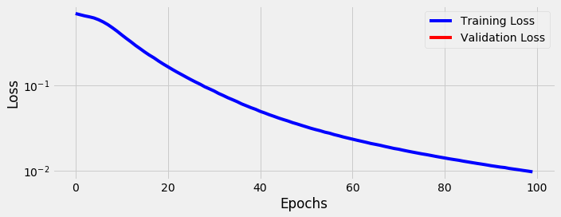
StepByStep.loader_apply(train_var_loader, sbs_packed.correct)
tensor([[66, 66],
[62, 62]])
1D Convolutions¶
temperatures = np.array([5, 11, 15, 6, 5, 3, 3, 0, 0, 3, 4, 2, 1])

size = 5
weight = torch.ones(size) * 0.2
F.conv1d(torch.as_tensor(temperatures).float().view(1, 1, -1),
weight=weight.view(1, 1, -1))
tensor([[[8.4000, 8.0000, 6.4000, 3.4000, 2.2000, 1.8000, 2.0000, 1.8000,
2.0000]]])
Shapes¶
seqs = torch.as_tensor(points).float() # N, L, F
seqs_length_last = seqs.permute(0, 2, 1)
seqs_length_last.shape # N, F=C, L
torch.Size([128, 2, 4])
Multiple Features or Channels¶
torch.manual_seed(17)
conv_seq = nn.Conv1d(in_channels=2, out_channels=1, kernel_size=2, bias=False)
conv_seq.weight, conv_seq.weight.shape
(Parameter containing:
tensor([[[-0.0658, 0.0351],
[ 0.3302, -0.3761]]], requires_grad=True), torch.Size([1, 2, 2]))

conv_seq(seqs_length_last[0:1])
tensor([[[ 0.6241, -0.0274, -0.6412]]], grad_fn=<SqueezeBackward1>)
\[
\Large
l_i * f = \frac{(l_i + 2p) - f}{s}+1
\]
Dilation¶

torch.manual_seed(17)
conv_dilated = nn.Conv1d(in_channels=2, out_channels=1, kernel_size=2, dilation=2, bias=False)
conv_dilated.weight, conv_dilated.weight.shape
(Parameter containing:
tensor([[[-0.0658, 0.0351],
[ 0.3302, -0.3761]]], requires_grad=True), torch.Size([1, 2, 2]))
conv_dilated(seqs_length_last[0:1])
tensor([[[ 0.5793, -0.7376]]], grad_fn=<SqueezeBackward1>)
\[
\Large
l_i * f = \frac{(l_i + 2p) - d(f - 1) - 1}{s}+1
\]
Data Preparation¶
train_data = TensorDataset(torch.as_tensor(points).float().permute(0, 2, 1),
torch.as_tensor(directions).view(-1, 1).float())
test_data = TensorDataset(torch.as_tensor(test_points).float().permute(0, 2, 1),
torch.as_tensor(test_directions).view(-1, 1).float())
train_loader = DataLoader(train_data, batch_size=16, shuffle=True)
test_loader = DataLoader(test_data, batch_size=16)
Model Configuration & Training¶
torch.manual_seed(21)
model = nn.Sequential()
model.add_module('conv1d', nn.Conv1d(2, 1, kernel_size=2))
model.add_module('relu', nn.ReLU())
model.add_module('flatten', nn.Flatten())
model.add_module('output', nn.Linear(3, 1))
loss = nn.BCEWithLogitsLoss()
optimizer = optim.Adam(model.parameters(), lr=0.01)
sbs_conv1 = StepByStep(model, loss, optimizer)
sbs_conv1.set_loaders(train_loader, test_loader)
sbs_conv1.train(100)
fig = sbs_conv1.plot_losses()
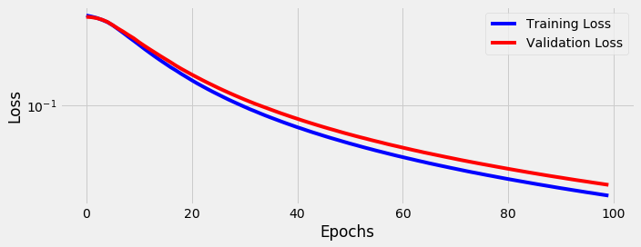
StepByStep.loader_apply(test_loader, sbs_conv1.correct)
tensor([[53, 53],
[75, 75]])
Visualizing the Model¶
model.conv1d.state_dict()
OrderedDict([('weight', tensor([[[-0.2186, 2.3289],
[-2.3765, -0.1814]]], device='cuda:0')),
('bias', tensor([-0.5457], device='cuda:0'))])

\[
\Large
edge\ feature = - 0.22\ x_0^{1st} - 2.38\ x_1^{1st} + 2.33\ x_0^{2nd} - 0.18\ x_1^{2nd} - 0.5457
\]
\[
\Large
\overline{AD}\ or\ \overline{DC} \implies x_1^{1st} \approx -1\ and\ x_0^{2nd} \approx 1 \implies edge\ feature > 0
\]
Putting It All Together¶
Fixed-Length Dataset¶
points, directions = generate_sequences(n=128, seed=13)
train_data = TensorDataset(torch.as_tensor(points).float(),
torch.as_tensor(directions).view(-1, 1).float())
train_loader = DataLoader(train_data, batch_size=16, shuffle=True)
Variable-Length Dataset¶
var_points, var_directions = generate_sequences(variable_len=True)
class CustomDataset(Dataset):
def __init__(self, x, y):
self.x = [torch.as_tensor(s).float() for s in x]
self.y = torch.as_tensor(y).float().view(-1, 1)
def __getitem__(self, index):
return (self.x[index], self.y[index])
def __len__(self):
return len(self.x)
train_var_data = CustomDataset(var_points, var_directions)
def pack_collate(batch):
X = [item[0] for item in batch]
y = [item[1] for item in batch]
X_pack = rnn_utils.pack_sequence(X, enforce_sorted=False)
return X_pack, torch.as_tensor(y).view(-1, 1)
train_var_loader = DataLoader(train_var_data, batch_size=16, shuffle=True, collate_fn=pack_collate)
There Can Be Only ONE… Model¶
class SquareModelOne(nn.Module):
def __init__(self, n_features, hidden_dim, n_outputs, rnn_layer=nn.LSTM, **kwargs):
super(SquareModelOne, self).__init__()
self.hidden_dim = hidden_dim
self.n_features = n_features
self.n_outputs = n_outputs
self.hidden = None
self.cell = None
self.basic_rnn = rnn_layer(self.n_features, self.hidden_dim, batch_first=True, **kwargs)
output_dim = (self.basic_rnn.bidirectional + 1) * self.hidden_dim
# Classifier to produce as many logits as outputs
self.classifier = nn.Linear(output_dim, self.n_outputs)
def forward(self, X):
is_packed = isinstance(X, nn.utils.rnn.PackedSequence)
# X is a PACKED sequence, there is no need to permute
rnn_out, self.hidden = self.basic_rnn(X)
if isinstance(self.basic_rnn, nn.LSTM):
self.hidden, self.cell = self.hidden
if is_packed:
# unpack the output
batch_first_output, seq_sizes = rnn_utils.pad_packed_sequence(rnn_out, batch_first=True)
seq_slice = torch.arange(seq_sizes.size(0))
else:
batch_first_output = rnn_out
seq_sizes = 0 # so it is -1 as the last output
seq_slice = slice(None, None, None) # same as ':'
# only last item in sequence (N, 1, H)
last_output = batch_first_output[seq_slice, seq_sizes-1]
# classifier will output (N, 1, n_outputs)
out = self.classifier(last_output)
# final output is (N, n_outputs)
return out.view(-1, self.n_outputs)
Model Configuration & Training¶
torch.manual_seed(21)
model = SquareModelOne(n_features=2, hidden_dim=2, n_outputs=1,
rnn_layer=nn.LSTM, num_layers=1, bidirectional=True)
loss = nn.BCEWithLogitsLoss()
optimizer = optim.Adam(model.parameters(), lr=0.01)
sbs_one = StepByStep(model, loss, optimizer)
#sbs_one.set_loaders(train_loader)
sbs_one.set_loaders(train_var_loader)
sbs_one.train(100)
#StepByStep.loader_apply(train_loader, sbs_one.correct)
StepByStep.loader_apply(train_var_loader, sbs_one.correct)
tensor([[66, 66],
[62, 62]])